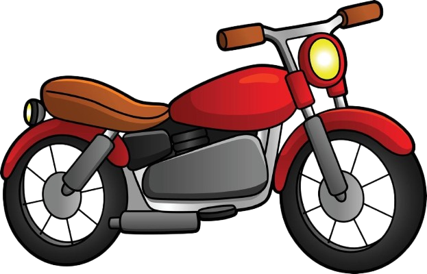

The people and passions behind me
My family, hobbies and interests
I am a creative and disciplined person who enjoys learning new things, working on personal projects, and spending time with my family.

Motorcycles
I own a Victory Nitro 125. Riding gives me a sense of freedom and teaches me to be responsible, careful, and focused.
Strength training
I go to the gym regularly. Training reminds me that meaningful results require discipline, patience, and consistency.
Brazilian Portuguese
I am studying Portuguese by myself. Discovering a new language is challenging, but it keeps my mind active and curious.
My family is very important to me. My father, Misael Alberto, is 53 years old and inherited the name Misael from my grandfather. He works in bookbinding and lithography.
Growing up around his work introduced me to printing, materials, colors, and visual communication. I believe his profession influenced my decision to become a graphic designer and inspired my entrepreneurial projects, Otup and Opia.